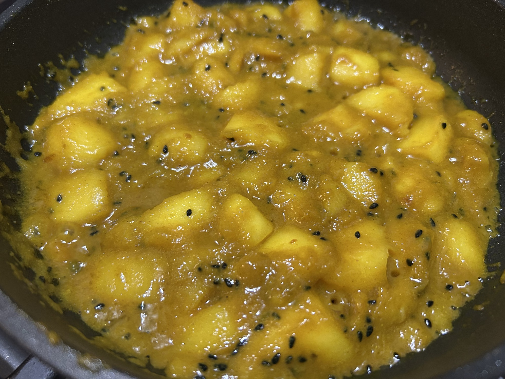

Condiment
Indian Sweet Mango Chutney
Ripe mango cooked down with nigella, ginger-garlic, green chilli and warm spices — sweet, sharp and still a little chunky.

Ingredients
- 1 ripe mango, cubed
- 1/2 tbsp oil
- 1 tsp ginger-garlic paste
- 1 green chilli, finely chopped
- 1/2 tsp nigella seeds
- 1/2 tsp turmeric
- 1/2 tsp ground coriander
- 1/2 tsp ground cumin
- 1/2 tsp salt
- 1 tbsp sugar
- 1/2 tbsp vinegar
Method
- Heat the oil and fry the ginger-garlic paste, green chilli and nigella seeds for about 30 seconds.
- Add the mango, turmeric, coriander, cumin, salt and sugar.
- Cook gently until the sugar has melted and the mango begins to soften.
- Add the vinegar and continue cooking until smooth and jammy while retaining some mango pieces.
Notes
Keep some mango intact: the best texture is a glossy jam-like base with soft fruit pieces running through it.